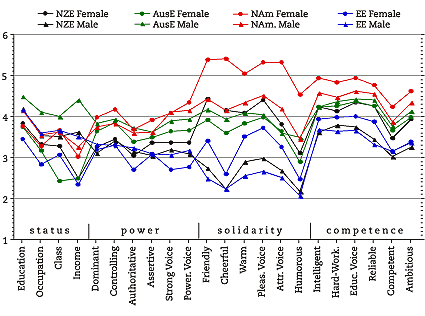
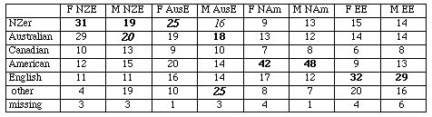
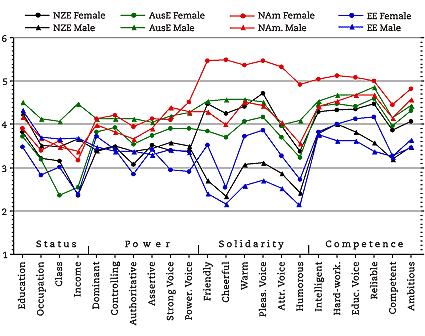
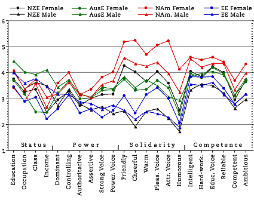
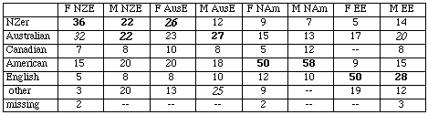
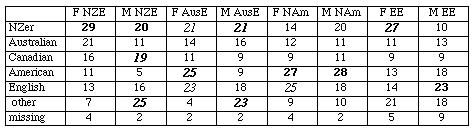

Evaluating
English Accents WorldWide Results: FIJI
Personality Trait Means for entire sample of
156 University of the South Pacific students
96 female, 56 male, 4 missing; mean age 23.2
(collected by France Mugler)

Points to note:
The sample consists of 156 University of the South Pacific students enrolled in a
first year course on the main campus in Suva, Fiji. The sample reflects the regional
nature of the University, which is owned and operated by 12 member countries. Most
students are from Fiji (131), with small numbers from nine of the other member countries:
Vanuatu (6) and Solomon Islands (3) in Melanesia; Tonga (6), Samoa (2), and Cook Islands
(1) in Polynesia; Tuvalu (4), Kiribati (1), and Marshall Islands (1) in Micronesia.
There is also an "international" student, from Nigeria.
As in the samples from the other countries in this survey, the
NAm female leads in solidarity, competence, and most power traits, followed by
the NAm male voice -- although the NAm female lead is by no means as marked in
power and competence traits as it is in solidarity.
The four male voices almost always rank above the female ones
in the four status traits, compared to the more even gender distribution
in samples from the other countries surveyed.
The AusE male voice ranks at the top in status, and in some power traits,
while the AusE female voice ranks low in status traits.
The EE male voice ranks very low in almost all traits excepting status,
and even there he is below the AusE male. The EE male is tied with the low-ranking
NZE male in solidarity and competence traits.
Ratings for all eight voices dip markedly in the "humorous" trait, including
the two Nam voices. In the other samples, this usually involves only four or five of
the voices, rather than all of them as here.
All University of the South Pacific Students' Accent Guesses
majority/plurality percentage for each speaker in boldface;
major erroneous guesses italicised

As in the other samples from speakers of English as a second language, the NAm accent
is the most commonly correctly identified, followed by the EE. As for the AusE and NZE accents,
they are identified correctly and mistaken for each other in almost equal measure. No accent
is correctly identified by the majority.
The Fiji subsample
The Fiji subsample includes 60 Fijians and 56 Indo-Fijians, which is fairly close to the
proportions of the two ethnic groups in the population at large (52 % Fijian, 46%
Indo-Fijian). The rest is made up of members of minority ethnic groups (Rotumans,
Banabans, Part-Europeans, Part-Fijian Chinese, Indian Part-Fijian, etc).
Fijian Personality Trait Means
60 University of the South Pacific students
39 female, 19 male, 2 missing; mean age 25.0
(collected by France Mugler)

Indo-Fijian Personality Trait Means
56 University of the South Pacific students
37 female, 18 male, 1 missing; mean age 19.4
(collected by France Mugler)

Points to note:
Two results for the Fijian sample are significantly different from those in the
Indo-Fijian sample and indeed all other samples in this survey so far:
The NAm male ranks relatively lower in solidarity traits.
The NZE male scores higher in status and power traits.
Fijian Students' Accent Guesses
majority/plurality percentage for each speaker in boldface;
major erroneous guesses italicised

Indo-Fijian Students' Accent Guesses
majority/plurality percentage for each speaker in boldface;
major erroneous guesses italicised

Points to note:
Two differences between the Fijian and the Indo-Fijian samples are worth noting:
The overall percentage of correct accent identification is significantly higher
for the Fijian sample. This is particularly so for the NAm, then the EE, and the
NZ accents.
The percentages of correct identification vary far more widely in the Fijian sample
(from 58% for the NAm male to 22% for the NZ male) than in the Indo-Fijian sample, which
are nearly all in the 20% range. Both NAm speakers are in fact correctly identified by the
majority of Fijian participants, as is the female EE.
Also note that the gender of the speaker seems to make a difference to the accuracy of identification,
particularly in the Fijian sample. The female EE is identified by 50%, but the male EE
only by 28%. The female NZ is identified by 36% and the male NZ by only 22%. On the other
hand, the male NAm and Aus speakers are correctly identified by a few percentage points
more than the female speakers.
Created by:
Owen Baxter,
Modified: 24 Jul 2002, Made with Macintosh